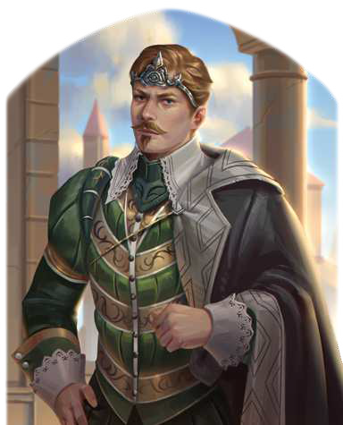

"Was? Ja, diese Problematik ist Uns wohl bewusst. Doch Wir müssen darüber nachdenken, denn bereits in der Vergangenheit hat sich gezeigt, dass man dergleichen keinesfalls leichtfertig angehen sollte. Wir wollen die Fehler der Geschichte doch nicht wiederholen. Also keine Truppen! Schickt Spitzel und Schreiber, die Uns mehr Kunde bringen, bevor Wir in dieser Sache eine Entscheidung treffen."
Der junge Kaiser des Horasreichs ist der Sohn der Magisterin der Magister, Aldare Firdayon, und des Kaiserdrachen Shair des Prächtigen. Er ist der eigentliche Sieger des Thronfolgekrieges im Horasreich, denn alle Parteien haben ihn anerkannt, selbst wenn viele unsicher sind, wie sich der Drachensohn wohl entwickeln wird. Auch nachdem er 1040 BF die Regierungsgeschäfte übernommen hat, zeigt er sich kaum in der Öffentlichkeit. Stattdessen zieht sich der Horas häuig in seine riesige Privatbibliothek zurück und verbringt lange Tage damit, über die Aufgaben eines Herrschers nachzusinnen. Ohne Frage ist Khadan schon jetzt einer der gebildetsten Menschen Aventuriens, aber seine berechnende Art und die unerschütterliche Ruhe, mit der er jedes Problem angeht, machen ihn selbst seinen Beratern unheimlich.
Volkes Stimme
- "Der Horas macht es richtig: lässt den Adel gewähren, aber wischt die Bedenken des Bürgertums nicht beiseite.
Ein Herrscher, der so wenig selbst in die Geschicke seines Reiches eingreifen muss, der hat sicher die besten Berater und weiß genau, was er tut"
- "Zieht sich ganz in den Sangreal zurück und tritt so gut wie nie in der Öffentlichkeit auf.
Was soll das bitte für ein Horas sein? Sein Volk braucht ihn nicht hinter den verschlossenen Türen seines prächtigen Palasts, es muss seinen Herrscher sehen können, um ihn zu lieben.
Khadan ist sich einfach nur zu schade!"